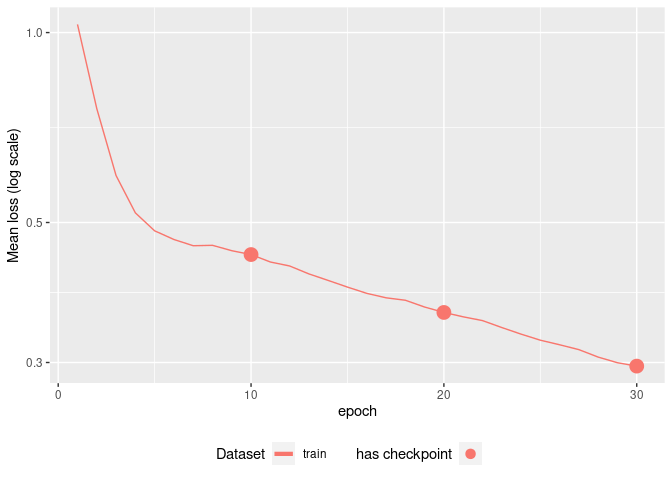

An R implementation of: TabNet: Attentive Interpretable Tabular Learning. The code in this repository is an R port of dreamquark-ai/tabnet PyTorch’s implementation using the torch package.
Installation
You can install the released version from CRAN with:
install.packages("tabnet")The development version can be installed from GitHub with:
# install.packages("remotes")
remotes::install_github("mlverse/tabnet")Example
library(tabnet)
suppressPackageStartupMessages(library(recipes))
library(yardstick)
#> For binary classification, the first factor level is assumed to be the event.
#> Use the argument `event_level = "second"` to alter this as needed.
library(ggplot2)
set.seed(1)
data("attrition", package = "modeldata")
test_idx <- sample.int(nrow(attrition), size = 0.2 * nrow(attrition))
train <- attrition[-test_idx,]
test <- attrition[test_idx,]
rec <- recipe(Attrition ~ ., data = train) %>%
step_normalize(all_numeric(), -all_outcomes())
fit <- tabnet_fit(rec, train, epochs = 30)
suppressWarnings(autoplot(fit))
#> Warning: Removed 30 row(s) containing missing values (geom_path).
metrics <- metric_set(accuracy, precision, recall)
cbind(test, predict(fit, test)) %>%
metrics(Attrition, estimate = .pred_class)
#> # A tibble: 3 × 3
#> .metric .estimator .estimate
#> <chr> <chr> <dbl>
#> 1 accuracy binary 0.850
#> 2 precision binary 0.883
#> 3 recall binary 0.947
cbind(test, predict(fit, test, type = "prob")) %>%
roc_auc(Attrition, .pred_No)
#> # A tibble: 1 × 3
#> .metric .estimator .estimate
#> <chr> <chr> <dbl>
#> 1 roc_auc binary 0.742